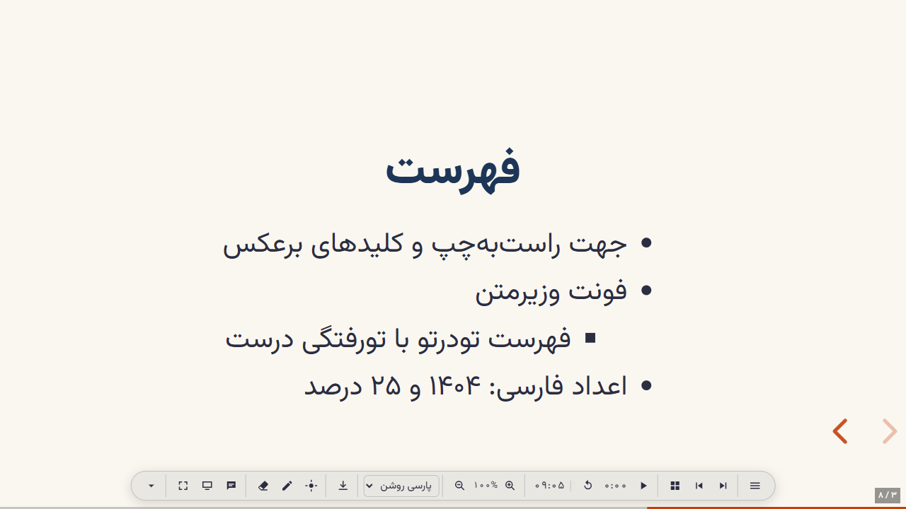
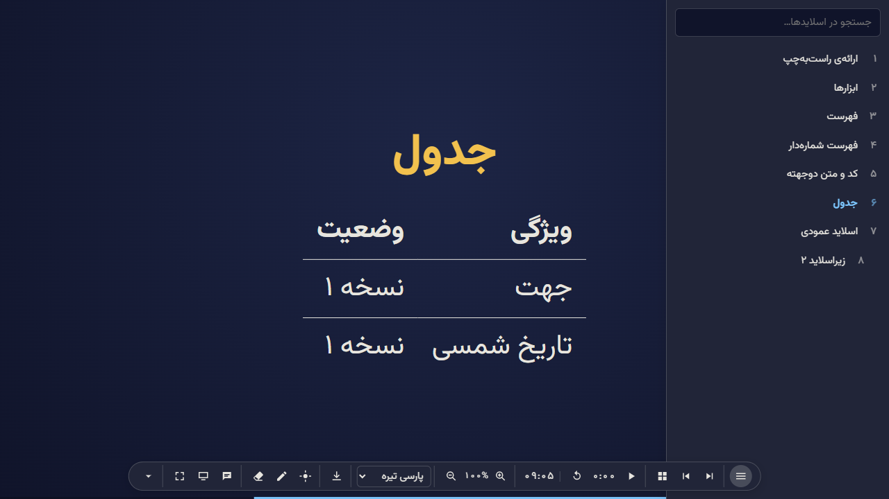

دو پلاگین برای reveal.js 6: جهت و تایپوگرافی درست، اعداد فارسی، فونت وزیرمتن، نوار ابزار، فهرست اسلایدها، تایمر، قلم و خروجیهای مختلف.


npm create reveal-rtl my-talk # new presentation (--lang ar | en) npm install reveal.js reveal-rtl # existing project npx reveal-rtl-lint slides/ # Persian text check
<link rel="stylesheet" href="https://cdn.jsdelivr.net/npm/reveal-rtl@0.5.0/core/rtl.css">
<script src="https://cdn.jsdelivr.net/npm/reveal-rtl@0.5.0/dist/reveal-rtl.js"></script>
Reveal.initialize({
rtlOptions: { lang: 'fa' }, // 'fa' | 'ar' | 'en'
plugins: [ RevealRTL() ]
});
نمونهی کامل، تنظیمات و توضیحات در README پروژه روی GitHub است.
جهت، کلیدها، کشیدن انگشت، فهرستها و جدولها در همهی تمهای reveal.js درست کار میکنند.
اعداد فارسی، عربی یا لاتین در متن، شمارهی اسلاید و PDF؛ تاریخ شمسی با یک تگ.
وزیرمتن بدون اینترنت و بدون Google Fonts؛ متن فارسی داخل کد هم درست نمایش داده میشود.
فهرست اسلایدها با جستجو و پیشنمایش، نمای شبکهای و رفتن به اسلاید با شماره.
تایمر معکوس با هشدار، نشانگر لیزری، قلم، یادداشتها و پنجرهی سخنران راستبهچپ.
PDF، JSON، Markdown، HTML و HTML آفلاین تکفایلی که بدون اینترنت اجرا میشود.
همهی برچسبها به فارسی، عربی و انگلیسی؛ هر برچسب قابل تغییر است.
دو تم «پارسی روشن» و «پارسی تیره» با فاصلهی خطوط مناسب فارسی و عربی.
| ← → | اسلاید بعدی / قبلی | M | فهرست اسلایدها |
| Esc | نمای شبکهای | T | پنهان/نمایش نوار ابزار |
| G | رفتن به اسلاید | Z | نشانگر لیزری |
| S | پنجرهی سخنران | D | قلم |
| F | تمامصفحه | E | پاک کردن نوشتهها |
| ? | راهنمای کلیدها | B | مکث |